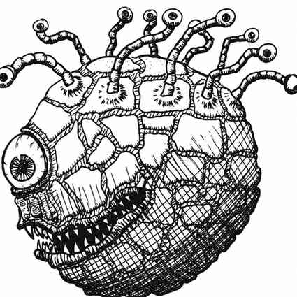

眼魔 · Beholder
 |
|
眼魔（又称“眼暴君”或“万眼之球”）通常栖息在地下，偶尔也会在荒凉的野外筑巢。它的球状躯体靠悬浮能力支撑，缓慢地随意漂浮。球体顶部长着 10 根眼柄，中央则有一只巨大的第 11 只眼睛和一张布满尖牙的大嘴。坚硬的几丁质外壳保护着躯体；眼柄和眼睛也受到保护，但防护较弱，因此躯干、眼柄和眼睛的护甲等级分别为 0、2、7。
眼魔即使失去眼柄也能存活；眼柄不计入其生命值，断掉后会再生，每根需要 1 周。躯体可承受其总生命值的 2/3，中央大眼可承受剩余的 1/3。例如，总生命值为 45 的眼魔，躯体受到 30 点伤害才会死亡，中央眼受到 15 点伤害则会失去功能。每根眼柄在被毁前可承受 8–12 点伤害。其躯体占潜在受击面积的 75%，中央眼占 10%，眼柄合计占 10%，十只小眼合计占 5%。